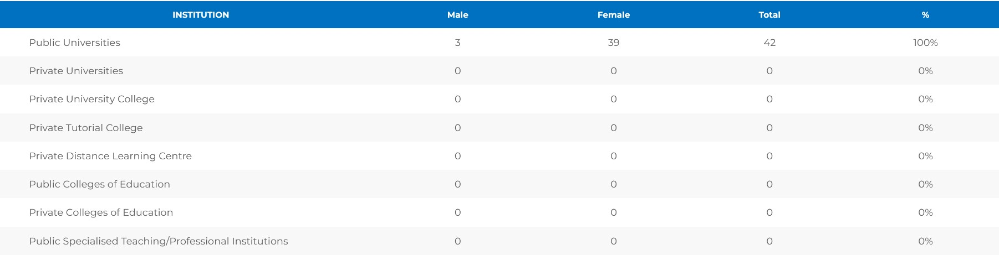

Tertiary Education Statistics (TES)
The Ghana Tertiary Education Commission (GTEC), Tertiary Education Statistics (TES) is the official and valid source of data on tertiary education in Ghana.
As the regulatory body for tertiary education in Ghana tasked with the function of collecting, analysing and publishing information on tertiary education in Ghana, the TES contains a wide range of data based on all accredited tertiary education institutions in Ghana.
The Tertiary Education Statistics (TES) was developed with the support of Education Sub Saharan Africa (ESSA).
The TES presents a comprehensive and easy-to-use web application for uploading, viewing and downloading data (i.e., Students, Staff, Tertiary Education Institutions etc.) on tertiary education in Ghana. Data in the TES are organized in a tree view by topic and Users can build their own customized data tables and export data in Excel or PDF format.
Internation Standard Classification Of Education (ISCED)
mapping programmes run by Tertiary Education Institutions by ISCED fields of study
Gender Parity Index
GPI= [Total Female Student Enrolment in Tertiary Education] ÷ [Total Male Enrolment in Tertiary Education
Total Students Enrollment
This is the list of Tertiary Education Institutions the 2019 - 2023 data covers.

The Ghana Tertiary Education Commission (GTEC) is certified by the Data Protection Authority and is committed to ensuring the security and protection of all personal data collected and processed are secured from unauthorized access. The GTEC undertakes to ensure judicious application to improve policy development and enhance regulatory decision-making in accordance with the Data Protection Law 2012 (Act 843), of Ghana( provide a compliant and consistent approach to data.